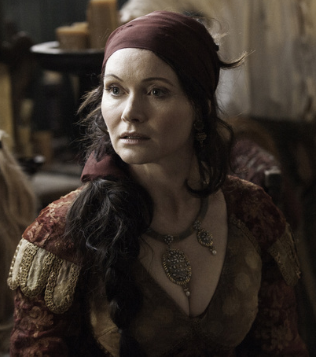
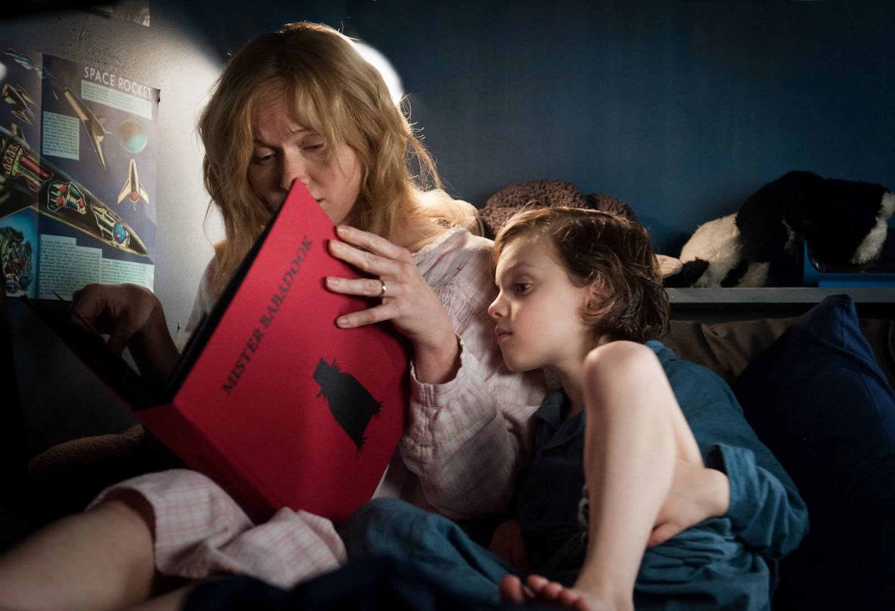

Description of my new site.
2018-04-28 12:12:57 +0200 CEST
April 28, 2018
Essie Davis je meno austrálskej herečky, ktorá bravúrne stvárnila postovu slečny Fisherovej. Narodila sa 07.01.1970. Okrem role slečny Fisherovej ste ju mohli vidieť napríklad v populárnom seriáliGame of Thrones, kde stvárnila postovu Lady Crane v šiestej sérii.

Essie „Esther“ Davis má za sebou množstvo filmov a seriálov. V roku 2014 získala niekoľko ocenení v kategórii Najlepšia herečka. Prevažne išlo o jej účinkovanie v australskom supernaturálnom psychologickom horore The Badadook. Stvárnila tam hlavnú postavu Ameliu Vanek, vdovu so synom, ktorú po prečítaní knihy začne prenasledovať strašidelný Babadook.

„I feel lucky that I've managed to get the roles I've wanted.“